Waldheiligtum: erste Asset-Auswahl
Auswahl aus Secrets. Baum, Gelände und Wasser sind in Unity übernommen; Figurenbasis und Leuchtblumen bleiben Vorschläge. Originalgrafiken vom Commit 99f5b1c. Bilder anklicken, um das jeweilige Original zu öffnen. Das Schachbrett macht Transparenz sichtbar.
Baum
Direkter Kandidat für die bisherigen Baum-Platzhalter. Originalimport: 24 Pixel pro Welteinheit; für den gemeinsamen Maßstab prüfen. Kollision nur am Stamm vorsehen.
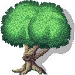
Gelände und Steinruinen
Gras, Felsränder, Wege und Steinflächen für das Heiligtum. Originalimport: mehrere Sprites, 32 Pixel pro Welteinheit. Einzelne Teile auswählen; das gesamte Sheet ist keine fertige Karte.
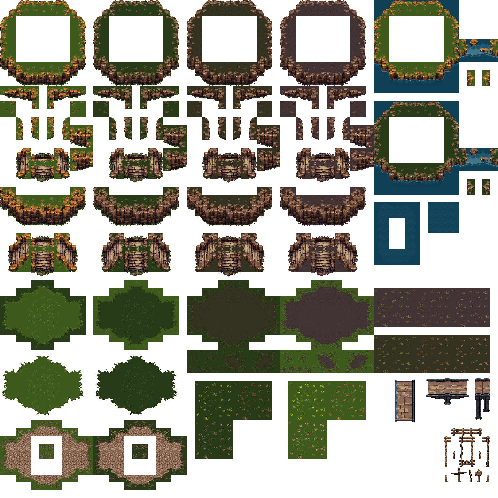
Wasser für die wiederhergestellte Quelle
Vorschlag: wenige Wasserflächen und Wellen aus diesem Sheet kombinieren. Ein eigenständiger Quellen-Sprite ist in dieser Auswahl nicht enthalten.
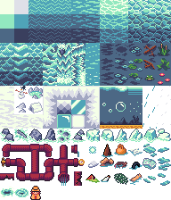
Figurenbasis
Vorschlag: zunächst diese weibliche Figurenbasis für Bewegung und Blickrichtungen erproben. Sie enthält zahlreiche Frames; Kleidung, Ausrüstung und die endgültige Figur bleiben offen.
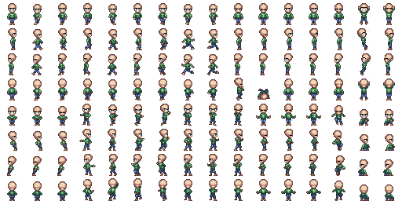
Leuchtblumen
Optionaler Vorschlag für sparsame Dekoration. Die eigentlichen Runen sollen weiterhin klar vom Hintergrund unterscheidbar bleiben.
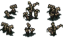
Weitere Vorschläge
Diese sieben Kandidaten liegen unter Assets/Art/Proposals. Sie sind noch nicht in der Spielszene platziert. Die ursprünglichen Schnitte und Pivot-Punkte bleiben erhalten; neue Asset-GUIDs verhindern Konflikte.
Waldläuferkleidung
Vorschlag für die erste Spielerfigur: Kleidung als Layer über der vorhandenen Figurenbasis. Beide Sheets verwenden 32-Pixel-Frames; die Animationszuordnung ist noch zu prüfen.
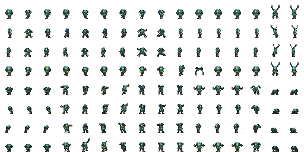
Laterne
Eine kleine gelbe Laterne als Ersatz für den bisherigen Lichtpunkt. Position und Maßstab zur Hand der Figur abstimmen; die Laternenmechanik bleibt dieselbe.
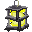
Höhleneingänge
Mehrere Gras- und Felsvarianten als Übergang zur späteren Rätselhöhle. Vorschlag: den grasbewachsenen Eingang für das Waldgebiet verwenden.
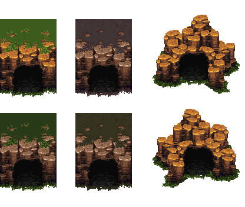
Höhlengelände
Felswände, dunkler Boden und ein Holzsteg. Noch als gesamter Bogen importiert: vor dem Malen einzelne Tiles schneiden und den Maßstab auf das Grid abstimmen.
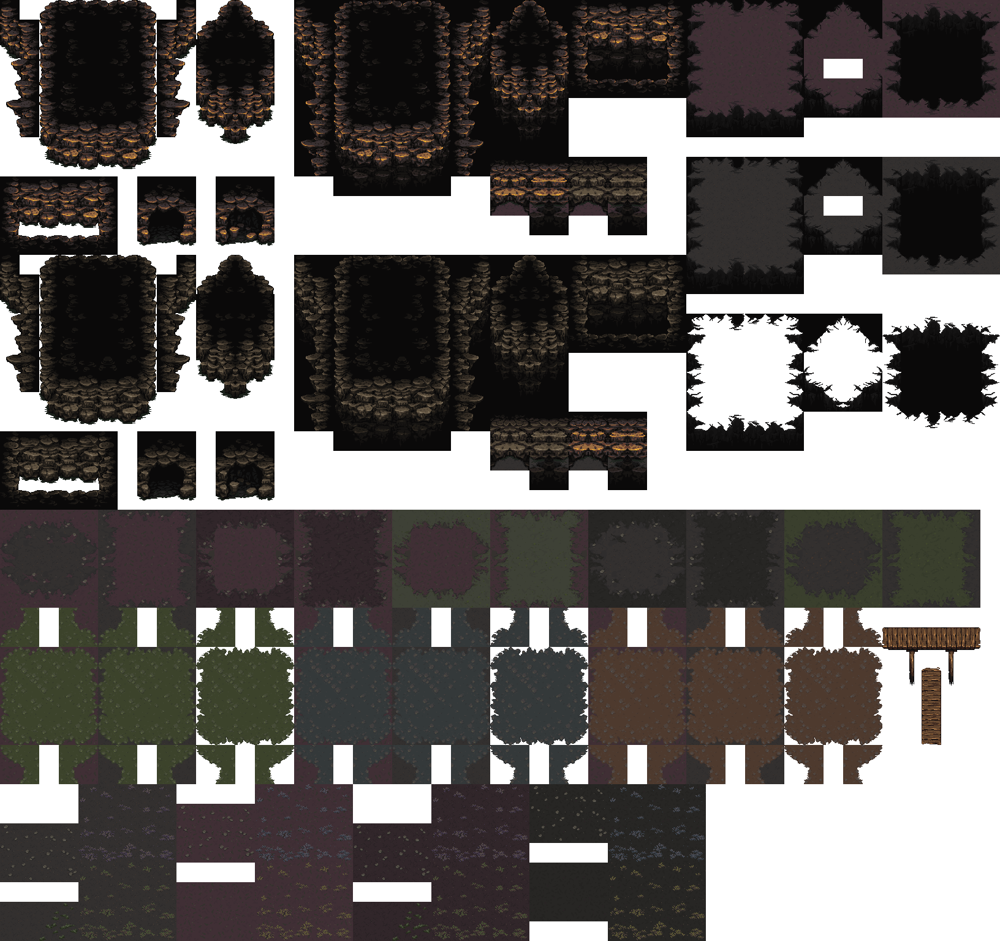
Ruinendekoration
Säulen, beschädigte Türme, Steine und Wurzeln. Vorschlag: wenige niedrige Ruinenteile am Heiligtum; hohe Säulen sparsam platzieren, damit Runen und Wege lesbar bleiben.
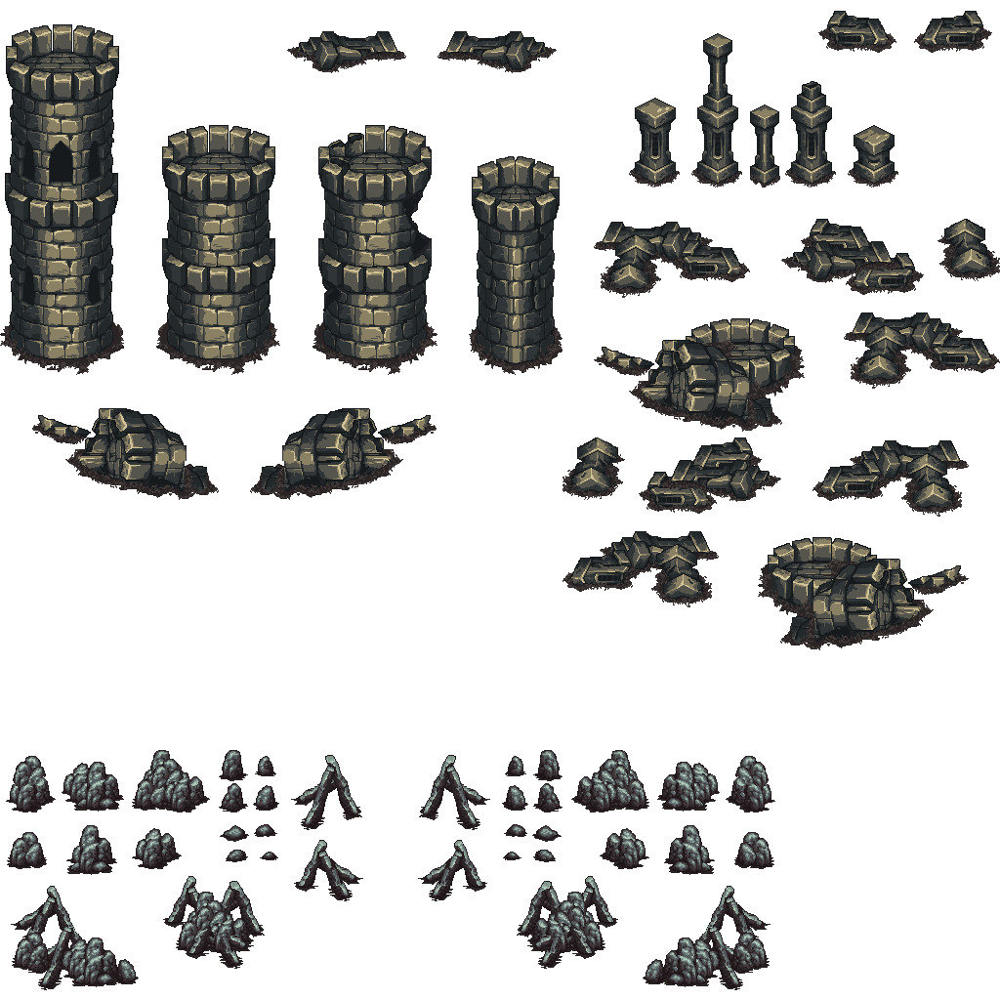
Schwert-Layer
Optionaler Ausrüstungs-Layer für spätere Aktionsanimationen. Noch keine Kampfmechanik; der Layer benötigt die richtige Figurenpose und Animationsreihenfolge.
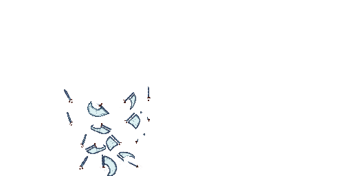
Lichteffekt
Ein einzelnes weiches Lichtmotiv als Vorschlag für eine kurze Rückmeldung beim Aktivieren eines Kreises oder Wiederherstellen der Quelle. Keine fertige Animation.
Weitere Bäume
Vier zusätzliche Vorschläge unter Assets/Art/Proposals. Animationsbögen sind im Project-Fenster als einzelne Frames aufklappbar; sie sind noch nicht als animierte Prefabs eingerichtet.
Rote Variante des bisherigen Baums
Gleiche Grundform mit rötlichem Laub. Originalimport: 24 PPU; vor dem Einbau an den bisherigen Baummaßstab mit 32 PPU anpassen.
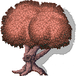
Baum mit gestufter Krone
Mehrere rote Kronenbüschel und kräftiger Stamm. Vorhandene Frames mit 128 × 160 Pixeln bei 32 PPU.
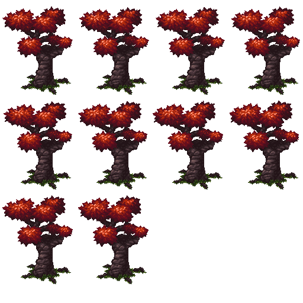
Höhere Kronenform
Weitere rote Baumform mit drei Kronenbüscheln. Vorschlag für einzelne markante Bäume; die Frames sind ebenfalls 128 × 160 Pixel bei 32 PPU.
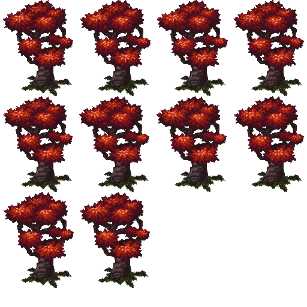
Knorriger Sumpfbaum
Laublose, verschlungene Äste und Wurzeln. Vorschlag für den Bereich an der versiegten Quelle oder für eine spätere Sumpfregion.
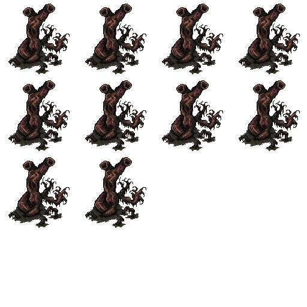